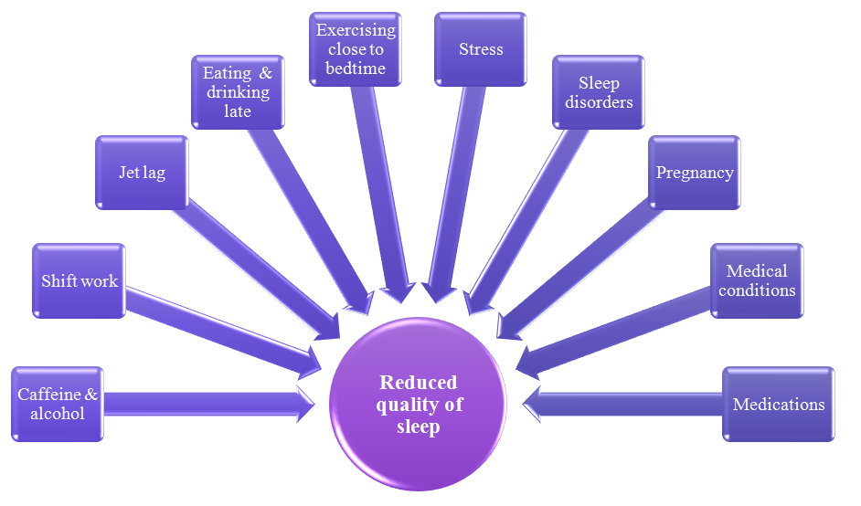
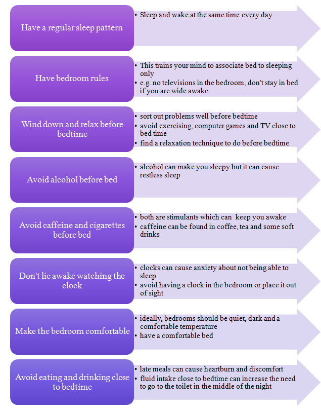
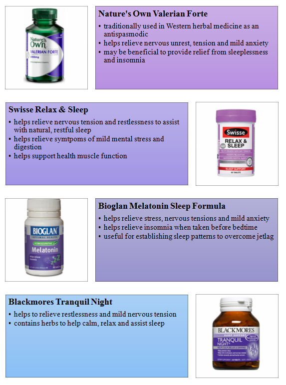
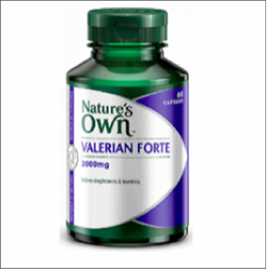

How important is sleep really? It is, in fact, so important that no one can live well without sleep. Scientists haven’t yet fully discovered why we need sleep, but they do know that whilst we sleep, our body restores itself physically and the brain uses this time to organise and process thoughts. What we all know from having probably experienced lack of sleep at least once, is how our concentration and mood were severely affected. We were probably feeling more forgetful, irritable and maybe even more depressed. So what can we do to make sure we get the most out of our sleep?
Why don't I feel like I’m getting enough sleep?
On average, adults require 8-9 hours of sleep. Unfortunately for some of us, this is more easily said than done. Below are a few reasons why our sleep quality might be reduced. If any of these concern you, please speak to your doctor or pharmacist.

I heard these from somewhere. Are they true?
There are many misconceptions about sleep. Below are just a few along with a brief explanation why they are false.
How can I improve my sleep quality?
Falling asleep is not an on and off button. However, we can create the optimum environment for sleep to overtake us. This is known as sleep hygiene. Below are just a few examples.

What else causes of sleeplessness?
Some prescription and over-the-counter medications can disturb sleep.
Pregnancy can also disturb sleep, especially in the final months due to leg cramps, chest discomfort and frequent need to go to the toilet.
Insomnia is when it is hard to get to sleep or stay asleep, poor quality of sleep or lack of refreshing sleep
Snoring can worsen with age and weight gain, and can also disturb the partner’s sleep.
Obstructive sleep apnoea involves various periods throughout the night when the sleeper has trouble breathing which results them arousing briefly from their sleep.
Restless legs syndrome manifests as an uncomfortable feeling in the legs that is only stopped when the legs are moved.
Bruxism is the grinding of teeth during sleep.
Nightmares are more common in children than adults and can cause children anxiety about going to bed.
If you are concerned about any of the above possibly impacting your sleep, speak to your doctor or pharmacist.
What medications can help me get a better night’s rest?
Improving sleep hygiene is recommended before any medications and vitamins. Any medications to assist with sleep should only be used short-term as it does not address the underlying cause of sleeplessness. Speak to your doctor or pharmacist for options that might suit you.
Below are some vitamins that may assist with improving sleep. Always speak to your doctor or pharmacist before commencing any vitamin products and if your symptoms persist.

Important facts

Nature's Own Valerian Forte
traditionally used in Western herbal medicine as an antispasmodic
helps relieve nervous unrest, tension and mild anxiety
may be beneficial to provide relief from sleeplessness and insomnia
Nature's Own Valerian Forte
traditionally used in Western herbal medicine as an antispasmodic
helps relieve nervous unrest, tension and mild anxiety
may be beneficial to provide relief from sleeplessness and insomnia
Nature's Own Valerian Forte
traditionally used in Western herbal medicine as an antispasmodic
helps relieve nervous unrest, tension and mild anxiety
may be beneficial to provide relief from sleeplessness and insomnia
Nature's Own Valerian Forte
traditionally used in Western herbal medicine as an antispasmodic
helps relieve nervous unrest, tension and mild anxiety
may be beneficial to provide relief from sleeplessness and insomnia
For more information, visit:
Australasian Sleep Association www.sleep.org.au
Snore Stop Clinic http://snorestopclinic.com.au/